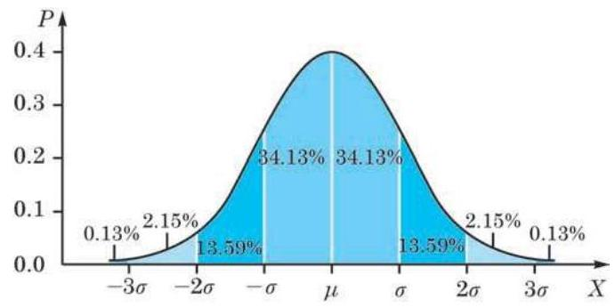

1 二项分布
考虑如下问题: 一次测验共有 10 道选择题, 每题备有 4 个选项, 其中只有 1 个正确. 如果某学生随意猜测答题, 问其答对一半以上的概率有多大. 这样的概率计算具有普遍性, 现在就来讨论这种题型的概率计算.
设有一个伯努利试验,其成功概率为 ,失败概率为 ,且 . 独立地重复该伯努利试验 次,用 表示成功的次数. 把 次试验看作具有 个标号的位置,其中每个位置都有两种可能:成功或者失败，分别标记为 1 和 0 . “成功次数为 ” 的事件 可以看作从 个位置里选择 个位置标记为 1,而其他标记为 0,这样的选择共有 种. 因为每次试验都是独立地进行,由独立性,每种标记发生的概率是 . 由概率的可加性,成功次数为 的概率为
其中 . 因为 ,所以 的分布可表示为
从这个角度可以证明二项式定理
独立重复伯努利试验是一个非常重要的概率模型, 在实际中经常出现.
例题 1
例 1 独立地重复 次成功概率为 的伯努利试验,求至少有一次成功的概率.
答案与解析收起 / 展开
解 用 表示成功次数. 至少有一次成功相当于 ,它的对立事件是 . 由概率的性质,至少有一次成功的概率为
当成功概率 很小时,通常说成功是小概率事件. 虽然在一次试验中,小概率事件几乎不可能发生,但因为 ,有 ,当试验次数 充分大时, 接近于零,即 接近于 1,所以至少一次成功的概率就会很大.
直观地说, 做一件事情, 不管成功概率多小, 只要执着地努力，重复的次数足够多，就有很大可能会成功. 如同俗语所说:失败是成功之母. 反过来说, 如果不断地重复, 小概率的坏事也终有可能发生. 例如, 开车一次发生事故的概率 很小,但是如果每天开车,长期下去还是很有可能发生事故的. 所以，不仅每次开车都要格外小心，减小事故发生的概率 ,而且要尽可能地减少开车次数 ,这样就能使发生事故的概率尽量减小.
例题 2
答案与解析收起 / 展开
解 用 表示第 次随机试验的结果: 若成功,则 ; 若失败,则 . 总的成功次数 可以表示为
按照定义, 的期望是
所以, 由期望的线性性质, 得
用同样的方法可以计算 的方差. 先计算 . 因为 ,所以
因为每次试验是独立地重复,所以 是相互独立的,且 . 由方差的性质, 有
由上式可见,方差关于概率 是一个其图像开口向下的二次函数,且它在 时达到最大值. 这说明,在成功概率是 时, 的分散度最大; 而当 与 相差较大时, 的分散度较小. 这就从数学上诠释了前面所说的随机性大小与概率大小的直观关系.
如果不断地重复, 那么一个小概率事件终究会发生.
练习 7.3(1)
练习7.3(1) · 1
答案与解析收起 / 展开
练习7.3(1) · 2
- 一批产品的二等品率为 0.3 . 从这批产品中每次随机取一件, 并有放回地抽取 20 次. 用 表示抽到二等品的件数,求 .
答案与解析收起 / 展开
2 超几何分布
例题 3
例 3 设袋中装有大小与质地相同的 6 个白球、 4 个黑球. 现在依次不放回地摸 5 个球,用 表示摸出的白球个数. 求 的分布.
答案与解析收起 / 展开
解 首先, 因为所考虑的是白球的个数, 与摸球的顺序无关, 而且是不放回地摸球, 所以从随机性的角度讲, 依次摸出 5 个球和一次摸出 5 个球是一样的. 其次, 由于是不放回地摸球, 前面摸球的结果会影响后面摸球的结果, 因此考虑问题的方法应该不同于放回摸球的情况.
因为黑球只有 4 个,所以变量 的取值范围是 、 5. 从 10 个球中取 5 个球的所有可能的取法, 不计顺序, 共有 种. 举例来说,事件 可以分为从 6 个白球中取 3 个,并从 4 个黑球中取 2 个这样两个步骤, 即
所以, 一般地说,
因此,如果一袋中装有大小与质地相同的 个白球、 个黑球,依次随机且不放回地取 个球,用 表示其中的白球数, 那么 的分布可由下式给出:
其中, 的取值范围由以下几个条件决定: 取得的白球个数不能超过 ,也不能超过 ; 同时,取得的黑球个数不能超过 ,即成立
如果简单地约定: 当 或者 时,组合符号 , 这样, 式中的 原则上就可以取任意的整数值.
定义 从一个装有大小与质地相同的 个白球、 个黑球的袋中随机且不放回地取 个球,其中的白球数的分布称为超几何分布 (hyper-geometric distribution).
例题 4
答案与解析收起 / 展开
解 我们将利用期望的性质来进行计算.
从装有大小与质地相同的 个白球、 个黑球的袋子中不放回地随机取 个球, 不能超过总个数 . 用 表示其中的白球个数. 这可以想象成依次取球,用 表示第 次取球的结果: 如果是白球, ; 如果是黑球, . 那么
本章 7.1 节中例 4 已经证明, 抽签概率与顺序无关, 所以
因此
从而
即 的期望为取球的个数乘白球的比例. 这与放回摸球情况下取得白球个数的期望是一样的.
从二项分布的期望计算到超几何分布的期望计算, 可以看出, 虽然期望和方差是用分布来定义的, 但是其计算过程实际上不一定要用到分布, 而只要使用期望和方差的性质即可.
二项分布和超几何分布的区别, 实质上就是摸球模型中放回摸球和不放回摸球的区别. 当 远大于 时,放回与不放回两种情况下的分布之间差别不大,即二项分布与超几何分布之间差别不大.
根据定义, 的期望为
取遍它的取值范围. 此式的直接计算比较困难.
注意, 虽然期望是一样的, 但它们的分布是不同的, 一个是二项分布, 另一个是超几何分布.
练习 7.3(2)
练习7.3(2) · 1
- 盒子中有大小与质地相同的 3 个白球、 1 个黑球, 若从中随机地摸出 2 个球, 求它们颜色不同的概率.
答案与解析收起 / 展开
练习7.3(2) · 2
- 从放有 6 黑 2 白共 8 颗珠子的袋子中抓 3 颗珠子,分别求黑珠颗数 与白珠颗数 的分布、期望与方差.
答案与解析收起 / 展开
练习7.3(2) · 3
- 从一副去掉大小王牌的 52 张扑克牌中任取 5 张牌，求:
(1)至少有一张黑桃的概率；
(2)至少有一个对子(两张牌的数字一样)的概率.
答案与解析收起 / 展开
- (1) 设事件 表示 5 张牌中至少有一张黑桃. .
(2)设事件 表示 5 张牌中至少有一个对子. .
3 正态分布
现今的信息时代，各媒体都充斥着数据，因此正确地理解数据成为非常重要的事. 正态分布已经是生活中一个常用的词了. 例如, 我们常提起学生的考试成绩是不是正态分布, 某个城市的家庭收入是不是正态分布，等等. 那么，究竟什么是正态分布呢? 平日所说的正态分布, 大体上是指数据对称地分布在某个中心值两边, 且离中心值越远, 分布得越少.
一包米的外包装上标示的质量是 5000 g,但实际上是有误差的. 假设包装米的公司没有故意偷工减料，计量员精确地检测所有在售的该种米, 把米包质量的频率分布直方图画出来, 会是一个什么形状呢? 图 7-3-1 中是一条峰值在 左右的曲线, 它具有一个单峰, 粗略展示了一个正态分布的形状. 实际上, 很多测量数据的分布都呈现出这样的形状.

图 7-3-1
数学中的正态分布是指由下面的函数所表达的分布:
其中有两个参数:
(1) 是该分布的期望或均值；
(2) 是该分布的方差，且总是假设 .

图 7-3-2
为了理解“一个函数所表达的分布”，要说明两点:第一，分布是指总数为 1 的量以某种方式分布在直线上; 第二, 该函数图像与 轴所夹部分的面积等于 1,但这个事实需要用到高等数学的知识才能证明.
定义 设 是一个取实数值的随机变量. 如果对任何给定的实数 与 落在区间 上的概率 等于三条直线: 与正态密度函数图像 所围的区域面积 (或者简称作此函数在该区间上的面积, 如图 7-3-3 所示),那么 服从正态分布 (normal distribution), 或更准确地说, 服从参数为 的正态分布,记为

图 7-3-3

图 7-3-4
这个函数没有简单的表达式, 其函数值可通过近似计算得到. 我们也可以通过某些型号的计算器来查它或者它的反函数的值, 如
容易验证 是一个偶函数,所以该函数在区间 上的面积等于其在区间 上的面积,如图 7-3-5 所示. 此外,由于 与 轴所围面积为 1,因此 满足

图 7-3-5
如果 ,那么将 平移再伸缩后将服从标准正态分布, 即成立
这样,正态分布 的密度函数的图像是一条钟形曲线,它关于直线 对称,其最大值在 处达到. 在 的左侧,函数严格增,而在 的右侧,函数严格减,从而它是一条单峰曲线. 当区间 在 轴上平移时,显然当 处于该区间的中心时,概率 即函数在区间 上的面积达到最大. 因此,我们通常说正态分布集中在其期望 的附近,即参数 表示分布集中的位置.
另外一个参数 描述的是分布的集中程度. 从图 7-3-2 中可以看出,密度函数的最大值在 处达到,其最大值为
它与 成反比. 由于图像与 轴之间的区域的总面积是一个固定值 1,因此当 变小时,最大值变大,钟形变 “高瘦”,分布向中心 处集中; 反之,当 变大时,最大值变小,钟形变 “矮胖”,分布向 的两边分散.
出于种种原因, 在测量的过程中总有误差存在. 通常我们总假设误差是一个服从正态分布的随机变量.
例题 5
例 5 某公司生产的糖果每包标识质量是 ,但公司承认实际质量存在误差. 已知每包糖果的实际质量服从 、 的正态分布. 问: 随意买一包糖果,其质量误差超过 (即 1%) 的可能性有多大?(结果精确到 0.1%)
答案与解析收起 / 展开
解 用 表示糖果质量,由题意,可知 . 要求 的概率,即求 的值. 令 ,则 . 因此,有
即误差超过 的可能性约是 .
例题 6
例 6 设 为任取的某袋有包装误差的产品的质量, . 分别求 及 的概率. (结果精确到 0.1%)
答案与解析收起 / 展开
解 令
那么 . 而 是标准正态分布的密度函数在区间 上的面积,它等于函数在区间 上的面积减去在区间 上的面积. 这样,就有
同样，
因此，随意购买一袋该产品，约有 68.3% 的可能性其质量在 左右 的范围内; 约有 95.4% 的可能性其质量在 左右 的范围内; 约有 99.7% 的可能性其质量在 左右 的范围内,如图 7-3-6 所示. 这称为正态分布的 (sigma) 原则.

图 7-3-6
练习 7.3(3)
练习7.3(3) · 1
答案与解析收起 / 展开
练习7.3(3) · 2
- 某校高中三年级 1600 名学生参加了区第一次高考模拟统一考试, 已知数学考试成绩 服从正态分布 (试卷满分为 150 分). 统计结果显示,数学考试成绩在 80 分到 120 分之间的人数约为总人数的 ，则此次统考中成绩不低于 120 分的学生人数约为 ( )
A. 80 ; B. 100 ; C. 120 ; D. 200.
答案与解析收起 / 展开
习题 7.3
A 组
习题7.3A · 1
- 一名学生每天骑车上学, 从家到学校的途中经过 6 个路口. 假设他在各个路口遇到红灯的事件是相互独立的,并且概率都是 .
(1)用 表示这名学生在途中遇到红灯的次数，求 的分布；
(2)求这名学生在途中至少遇到一次红灯的概率.
答案与解析收起 / 展开
1.(1) 的分布实际上是一个二项分布 .
(2) .
习题7.3A · 2
- 从有 7 名男生的 15 名学生中任意选择 10 名,用 表示其中的男生人数. 求 的值.
答案与解析收起 / 展开
习题7.3A · 3
- 某学生参加一次考试, 已知在备选的 10 道试题中, 能答对其中的 6 道题. 规定每次考试都从备选题中随机抽出 3 道题进行测试,求该生答对试题数 的分布.
答案与解析收起 / 展开
B 组
习题7.3B · 1
- 从一副去掉大小王牌的 52 张扑克牌中任取 5 张牌，用 表示其中黑桃的张数. 求 的分布、期望与方差.
答案与解析收起 / 展开
习题7.3B · 2
- 对于本节例 4 中所定义的 ,设 . 求:
(1) ；
(2) 与 .
答案与解析收起 / 展开
习题7.3B · 3
答案与解析收起 / 展开